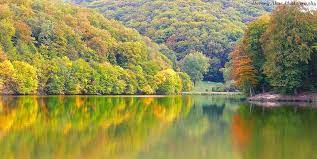
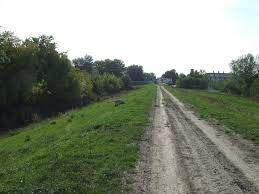
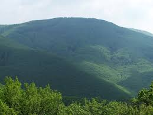
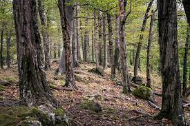
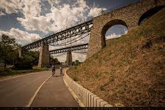
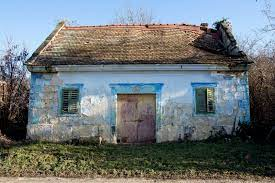

Csodás tájkép
Tükröződő fák a kis tó partján a Duna mentén
Tiszai gát
Poroszló menti Tisza töltés viharos időben
Börzsöny
Kilátás a fák mögül a szemközti hegyoldalra. Hollókő
Pléska-szikla felé
Úton a Pléska-szikla felé az őszi erdőben
Viadukt
Biatorbágyi Vidaukt a fák között
Régi présház
Elhagyatott présház Biatorbágy fölött
Nyakas-kő
Innen ugratta Ördög nevü lovát a mélybe Sándor Móricz gróf